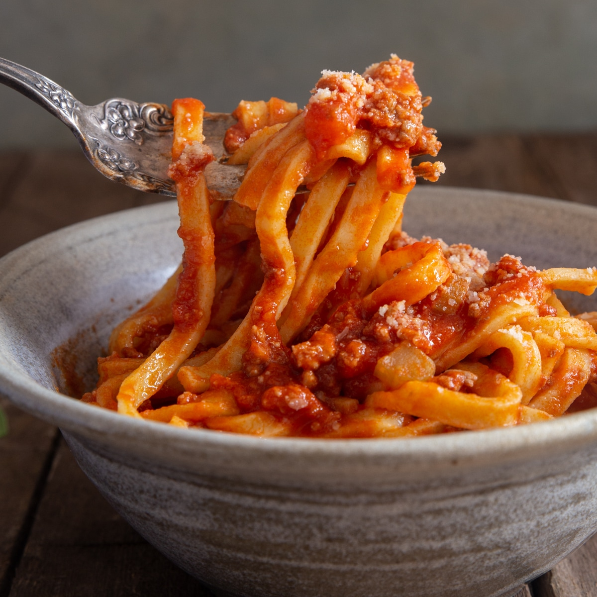

Bolognese Recipe

Ingredients
- 1 lb ground beef
- 1 onion, chopped
- 10 cloves garlic, minced
- 1 can (28 oz) crushed tomatoes
- 2 tbsp olive oil
- Salt and pepper to taste
- 1 tsp dried oregano
- 2 tbsp tomato paste
- 1/2 cup red wine (optional)
Instructions
- Heat olive oil in a large skillet over medium heat.
- Add chopped onion and minced garlic, sauté until soft.
- Add ground beef, cook until browned.
- Stir in crushed tomatoes, tomato paste, oregano, salt, and pepper.
- If using, add red wine and simmer for 30 minutes.
- Serve over pasta or as desired.
Home